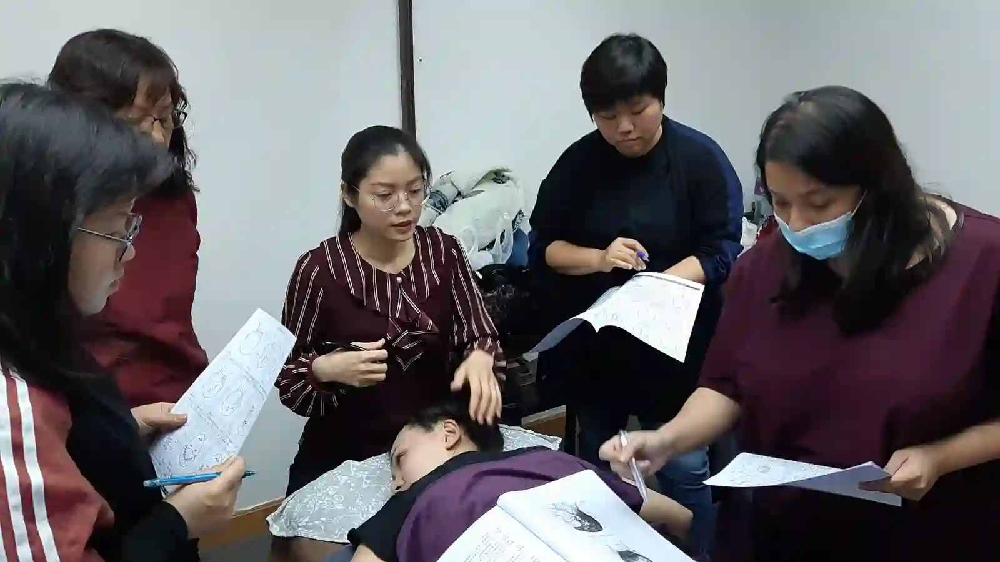

The Bojin Journal · Myths & real talk
Do Sleep Creases and Pillow Lines Undo Your Bojin Work?

You've probably seen it: you wake up, look in the mirror, and there's a crease pressed into one cheek or across your brow, exactly where your face met the pillow all night. It fades by mid-morning, mostly. And if you've been doing your bojin routine faithfully, a small worry creeps in: am I undoing my own work every single night?
It's a fair question, and one my students ask more than you'd think. Let me give you the honest picture, because the answer is reassuring, with one caveat worth knowing.
Why the creases show up
When you sleep on your side or your stomach, part of your face is pressed against the pillow for hours. Younger skin springs right back. As skin matures and loses a little of its natural bounce, those temporary folds linger a bit longer in the morning before smoothing out. That's the crease you see, and for most people it's exactly that: temporary.
The real question is whether the same spot, pressed the same way, night after night for years, gradually settles into a line that reflects your sleep position. Over a long time, that can happen, which is different from a single morning's crease fading by lunch.
How this fits with your bojin routine
Here's the reassuring part. A morning pillow crease is not undoing your bojin work. The gentle, temporary easing of tension you get from your routine and the surface fold from your pillow are two different things happening in two different layers. One night's crease smoothing out doesn't erase the consistency you're building.
A morning pillow crease and the tension-easing you get from bojin sit in two different layers. One fading overnight has nothing to do with the other.
If anything, your morning routine is a natural moment to address it. A few warm, gliding passes over a cheek or brow that slept creased is a pleasant way to help it smooth and to start the day, using the same order and angle you already know. A stainless steel bojin stick with a little oil glides nicely over that just-woke-up skin; the gua sha stone you own does the same.
The bigger lever, honestly, isn't the tool at all. It's the pillow and the position.
The 5 steps, morning-crease edition
- Notice which side you sleep on The creased cheek in the mirror usually tells you.
- Add slip and warm the area A little oil or cream, then a few flat, gliding passes to bring warmth to the creased cheek or brow.
- Smooth the fold gently Slow passes across the crease with the broad edge, comfortable pressure, helping the skin settle as it naturally would anyway, a little faster.
- Balance the other side Give the non-creased side a few passes too, so your routine stays even.
- Finish down the neck The same close as always, carrying everything down and off.
The part that matters more than the tool
If sleep creases genuinely bother you, the honest, boring fix is worth more than any technique: try sleeping more on your back, and consider a smoother or silk pillowcase, which lets skin slide rather than fold. Small changes to how you sleep do more for morning creases than anything you can do after the fact.
Honest expectations, and a safety note
Your morning routine can help a fresh crease smooth a little faster and feels lovely, but it's gentle and temporary, and it won't prevent the crease from forming in the first place. The prevention side is about sleep position and your pillowcase, not the stick.
For the next week, notice which cheek wears the crease, and try a few nights more on your back.
Quick answers
Do pillow creases undo my bojin work?
No. A morning crease is a surface fold in a different layer than the gentle tension-easing of your routine. One night's crease smoothing out doesn't erase your consistency.
Can bojin get rid of a morning sleep crease faster?
A few gentle, warm passes in the morning can help a fresh crease smooth a little faster, but the effect is gentle and temporary.
Can bojin prevent sleep lines from forming?
No. Prevention is mostly about sleep position and your pillowcase. Back-sleeping and a smoother or silk pillowcase help more than anything done afterward.
Which sleep changes actually help?
Sleeping more on your back so your face isn't pressed into the pillow, and a smoother or silk pillowcase that lets skin slide rather than fold.
Want a short morning smooth-and-de-puff routine?
Get my short morning routine to pair with this, plus the free video that shows the full sequence on a real face.
Watch the free 3-min videoYu-Ting Lan is a Taiwan-based international bojin instructor and the founder of Héhé Studio. She has taught her bojin method to more than a thousand students, from complete beginners to grandmothers, across Taiwan, Hong Kong, and Malaysia.